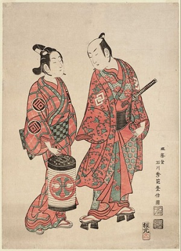
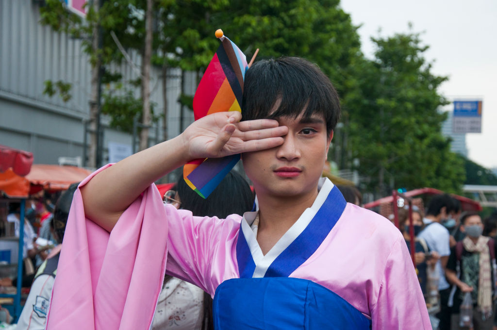

LGBT History and Rights in Japan Research
LGBTQ+ relations have always been apart of Japanese history; it can date back to ancient times. Around the pre-Meji period, these homosexual relationships were predominant in religious affairs. In Buddhist times, it was known that there was a nenja, who could have been a monk or priest, and a chigo, a young boy, who had a sacred relationship (1. Furukawa, Makoto). These same-sex relationships bled into the samurai’s where a young boy, a chigo, would become a lover to an older man, nenja, who they would be apprenticing until the chigo came of age (2. Childs, Margaret). These types of relationships were heavily acceptable during this time period until the 19th and 20th century. Same-sex sexual activity was briefly criminalized in Japan from 1872 to 1880. Japans culture and and major religions do not have a history of dicrimination towards same-sex couples or the LGBT community in general.
The change from acceptance to rejection of same-sex relationships in Japan is often blamed on the Western influence surrounding this time. This western influence resulted in the criminalization of sodomy in 1872 which was then repealed soon after in 1879-1880. Jumping forward to Japan in today’s day and age, several LGBTQ+ rights are not protected or are not acknowledged. While same-sex marriage is not legal as of currently, it is also not prohibited, leaving room for hope and activism for same-sex marriage to be accepted. Sexual Orientation and gender identity has also not come into protection as of 2021. In a survey done in 2019 revealed that sixty-eight percent of Japans population agrees that homosexuality should be supported by society (4. Pew Research Center). Tokyo Rainbow Pride has been held annually since 2012 with attendance increasing steadily every year since. As of 2021, sexual orientation and gender identity are not protected by national civil rights (5. Hongo, Jun). A survey done in 2018 showed that more then sixty-five percent of LGBT people in Japan have not come out to anyone at work or at home.
Currently the state of LGBT in Japan is poor compared
to the rest of the world. Same-sex couples are not allowed to legally adopt in Japan. Lesbian couples and single women are unable to access IVF and artificial insemination (3. RINGLER, GUY).
The Liberal Democratic Party of Japan has indicated an opposition to legalizing same-sex marriage. Japan’s conservative governing LDP has been
accused of violating the Olympic charter after it failed to approve a bill to protect the rights of the LGBT community. A Japanese lawmaker
described LGBT people as being morally unacceptable. Another lawmaker named, Kazuo Yana, said sexual minorities are resisting the preservation of the
species that occurs naturally in biological terms, as stated by the media (6. The Guardian).
Acknowledgements
1.Furukawa, Makoto. The Changing Nature of Sexuality: The Three Codes Framing Homosexuality in Modern Japan. pp. 99, 100, 108, 112.
2.Childs, Margaret (1980). "Chigo Monogatari: Love Stories or Buddhist Sermons?". Monumenta Nipponica. Sophia University.
3.RINGLER, GUY. "Making LGBT Families a Possibility in Japan". 7 March 2016.
4."The Global Divide on Homosexuality Persists". Pew Research Center. 25 June 2020.
5."Gay scene: Tolerance, legal limbo". Jun Hongo. Japan Times. Tuesday, 23 Dec. 2000.
6."Japan's ruling party accused of violating Olympic charter over LGBT rights". The Guardian. 24 May 2021.